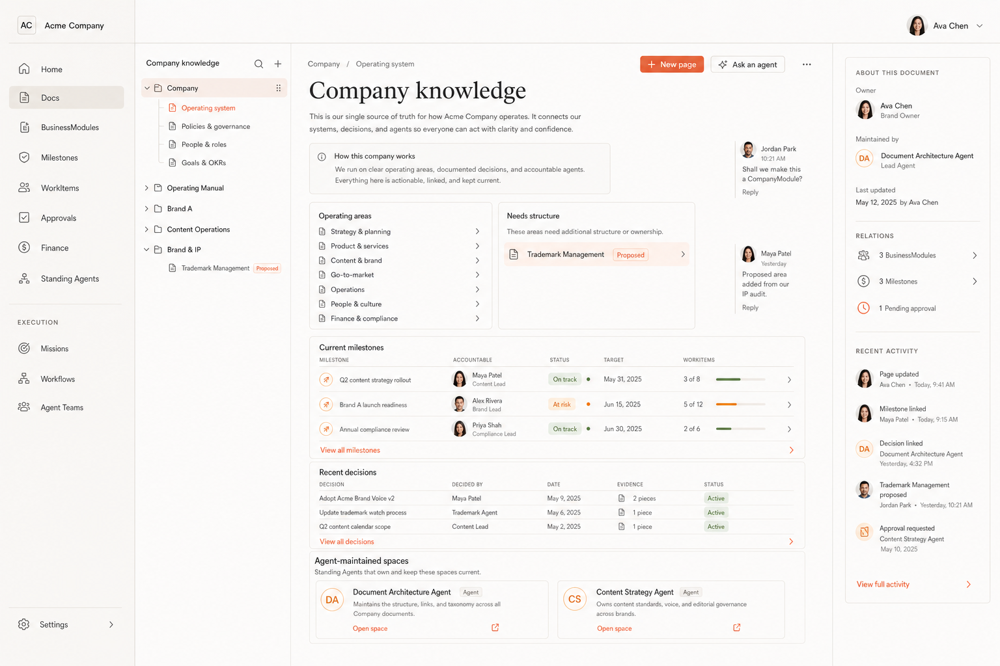
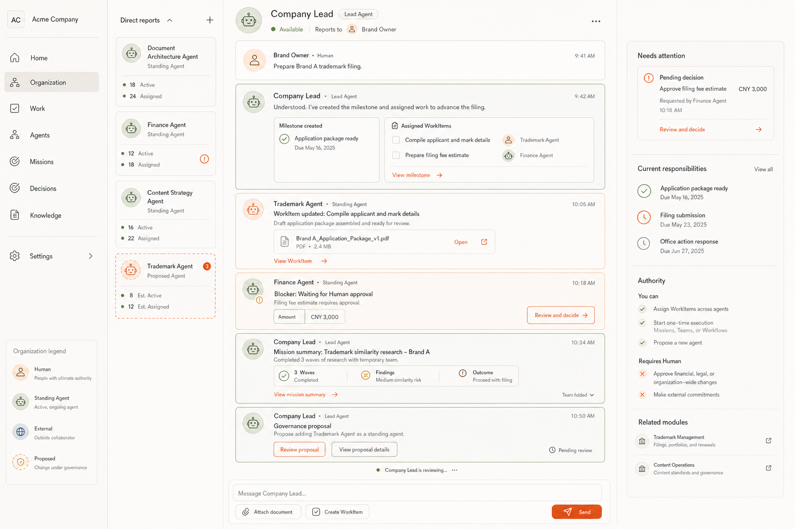
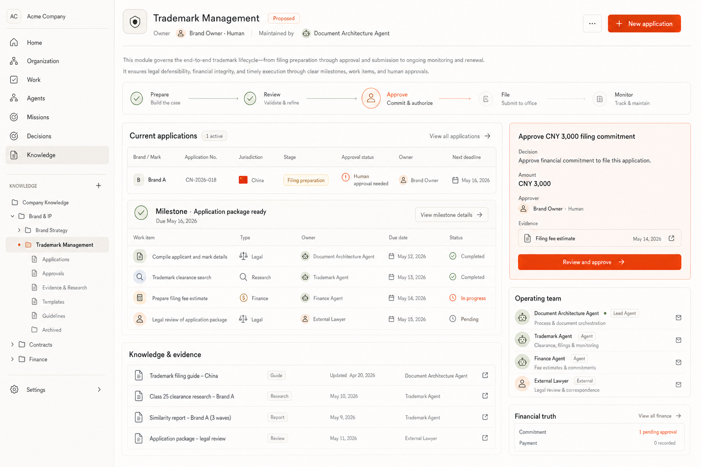
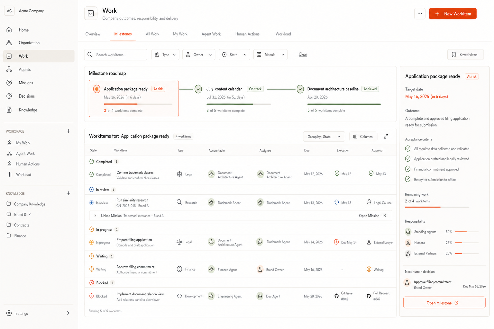
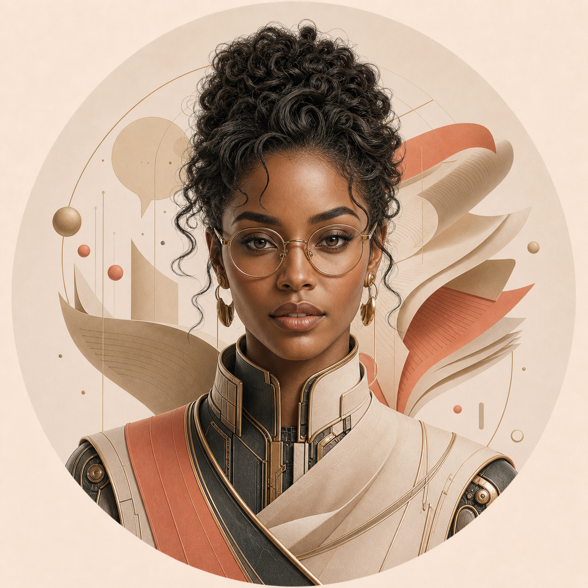
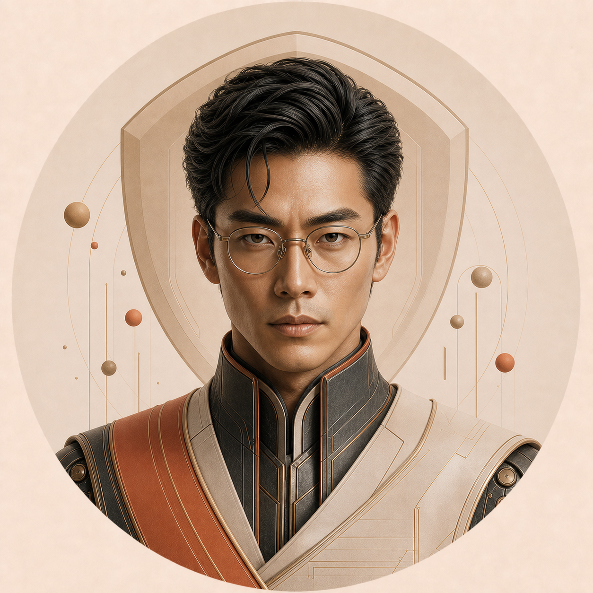

V1 是已经验证的功能基线；V2 重新定义产品层级、协作方式和视觉语言。以下对照只用于评审设计方向，V2 尚未实现，也没有被自动视为批准。
Six mother pages
V1 actual baseline → V2 expectedCompany Home
Morning operating brief · decisions and Milestones


Docs Workspace
Company knowledge · authored pages and embedded live views


Organization
Human Owner → Lead Agent → direct Standing Agents


Lead Agent Workspace
Long-lived collaboration, direct reports, one-time execution summaries


Business Module
Trademark Management · domain page over shared Company OS truth


Work
Milestones and typed WorkItems · no Project, no Task Graph


Standing Agent identity family
Stable visual identity · authority remains explicit data Company LeadLead Agent
Company LeadLead Agent Document ArchitectureStanding Agent
Document ArchitectureStanding Agent FinanceStanding Agent
FinanceStanding Agent
Content StrategyStanding Agent
TrademarkProposed Standing Agent评审重点：整体美术方向、六种页面构图是否准确、头像家族是否符合长期 Agent 的产品感。确认后才会扩展 Document、Milestone、typed WorkItem、Approval、Finance、Mission/Wave、Agent Team 等完整页面族。